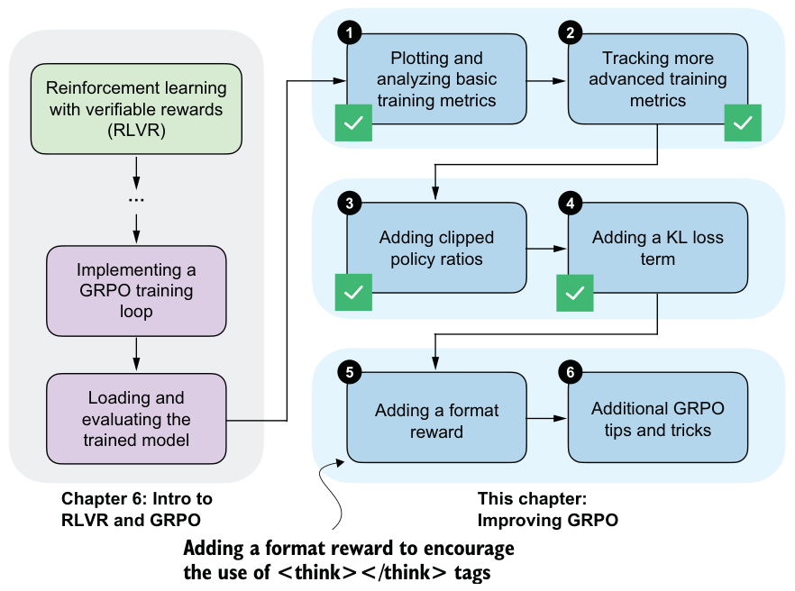

KL direction versus rollout sampling
old_logps - new_logps. However, the KL-style term here has a different purpose. It is intended to penalize the drift of the current policy from the fixed reference policy, so the corresponding logprob difference is new_logps - ref_logps. The subtlety is that the responses are generated by the old rollout policy, not by the current policy after the update. Therefore, mean(new_logps - ref_logps) is a simplified sampled surrogate rather than an exact KL estimate. A more principled off-policy version would use an importance-sampling correction, which we’ll discuss in the next subsection.Because the term is not length normalized, its magnitude grows with the response length. This does not mean that longer outputs are always favored, since additional tokens can either increase or decrease the loss depending on the per-token logprob difference between the current and reference policy. However, because the rollouts are sampled from the old policy, this simple sampled surrogate is not an exact KL estimate for the current policy unless we either sample from the current policy or apply an importance-sampling correction. As a result, the objective becomes length sensitive, which can bias training toward longer outputs in some cases, as suggested by the growing response length here, and can destabilize training.
Second, once rewards collapse to zero around step 200, the KL term becomes the only remaining source of gradient signal. When all rewards are zero, the advantages are also zero, so the policy gradient loss no longer contributes any gradient. The KL term is still active and starts to dominate the updates. In an exact KL-to-reference objective, this would pull the model back toward the reference policy. However, the simplified KL
surrogate used here, kl_loss = kl_coeff * mean(new_logps - ref_logps), is evaluatedonly on sampled rollouts from the old policy, and ref_logps acts as a constant during optimization. On those fixed sampled tokens, minimizing the loss mainly pushes down the current model’s probability on the sampled actions, which can make the next-token distribution more spread out and raise entropy. The observed behavior is better understood as a failure mode of this sampled surrogate, which can lead to increasingly random outputs and the drop to 0.0% evaluation accuracy. If you want, you can plot the other evaluation metrics, such as policy_ratio, adv_avg, adv_std, and entropy_avg, and confirm that the entropy becomes very large.
While the KL term is a standard part of the GRPO algorithm, which is why I’ve introduced it here, several recent works report that models can train better without it. Examples include Dr. GRPO, Olmo 3, and DeepSeek-V3.2, all of which observe improved stability or performance when the KL term is reduced or omitted (see appendix A for more detailed references).
Improving training stability with a KL term
kl_coeff from 0.02 to a smaller value (for example, 0.001) to weaken the KL penalty, although this was not sufficient in my experiments. Since we saw that the response length keeps growing until it hits the maximum, another option is to length normalize the sequence logprobs by dividing by the number of generated tokens, which approximates average per-token logprobs. This could reduce the incentive to increase response length to accumulate larger absolute logprob differences. A third option is to use a reweighted KL term based on importance sampling, as proposed by DeepSeek-V3.2. This matters because the rollouts are generated by the old policy, while the KL term is intended to constrain the current policy relative to the reference policy. Instead of usingkl_loss = kl_coeff * torch.mean(logps - ref_logps)kl_loss = (
kl_coeff * torch.mean(torch.exp(new_logps - old_logps)
* (new_logps - ref_logps)
)torch.exp(new_logps - old_logps) corrects for rollouts being generated by the old policy, and it downweights samples that the current policy would rarely produce and upweights those it would. Finally, we could add a small format reward to prevent advantages from collapsing to zero (we will revisit format rewards in the next section). That said, for math data, a common recommendation is to omit the KL term altogether (e.g., Dr. GRPO, Olmo 3, and DeepSeek-V3.2), which also simplifies the code and reduces resource requirements, since we don’t have to keep an additional reference model in memory.7.6Adding an explicit format reward
So far, we’ve used only one type of verifiable reward, an answer-correctness reward, when training the model. In practice, this is sufficient to train reasoning models with RLVR. It is also common to use one or more auxiliary rewards, such as a format reward that checks whether the generated answer follows certain formatting guidelines (figure 7.17).

</think> tokensSpecifically, we’ll focus on a format reward that encourages the model to use
<think>...</think> tokens.